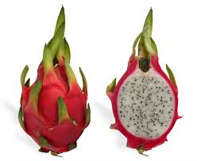

The Dragon Fruit

Introduction:
A pitaya (/pɪˈtaɪ.ə/) or pitahaya (/ˌpɪtəˈhaɪ.ə/) is the fruit of several different cactus species indigenous to the region of southern Mexico and along the Pacific coasts of Guatemala, Costa Rica, and El Salvador. Pitaya is cultivated in East Asia, South Asia, Southeast Asia, the United States, the Caribbean, Australia, Brazil, and throughout tropical and subtropical regions of the world.
Pitaya usually refers to fruit of the genus Stenocereus, while pitahaya or dragon fruit refers to fruit of the genus Selenicereus (formerly Hylocereus), both in the family Cactaceae. The common name in English – dragon fruit – derives from the leather-like skin and scaly spikes on the fruit exterior. Depending on the variety, pitaya fruits may have sweet- or sour-tasting flesh that can be red, white, or yellow in color.
Vernacular names:
These fruits are commonly known in English as "dragon fruit", a name used since 1963, apparently resulting from the leather-like skin and prominent scaly spikes on the fruit exterior. The fruit is often designated as "Vietnamese dragon fruit" as Vietnam is the lead exporter. The fruit may also be known as a strawberry pear.
The names pitahaya and pitaya derive from Mexico, and pitaya roja in Central America and northern South America, possibly relating to pitahaya for names of tall cacti species with flowering fruit.
Geography:
Pitaya or dragon fruit is native to the region of southern Mexico and along the Pacific coasts of Guatemala, Costa Rica, and El Salvador. The dragon fruit is cultivated in East Asia, South Asia, Southeast Asia, the United States, the Caribbean, Australia, and throughout tropical and subtropical regions of the world.